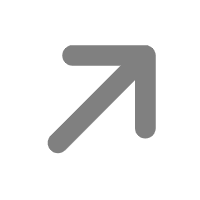
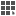
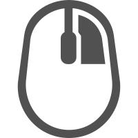

座区图编辑器
|
工具箱

单选
单选

全选
取消全选
行选中
列选中
类别选中
框选
圆形座区
跑道形会场
圆形座区
位移
位移
右移
左移
下移
上移
横向分布
垂直分布
横向分布
左对齐
左对齐
左右对齐
右对齐
上对齐
上下对齐
下对齐
恢复座区
恢复删除
恢复座区

设置向心点
设置向心点
关闭向心点
向心点列表
[#会议名称#]座区图
地点：[#会议地点#]
时间：[#会议时间#]
备注：[#会议备注#]